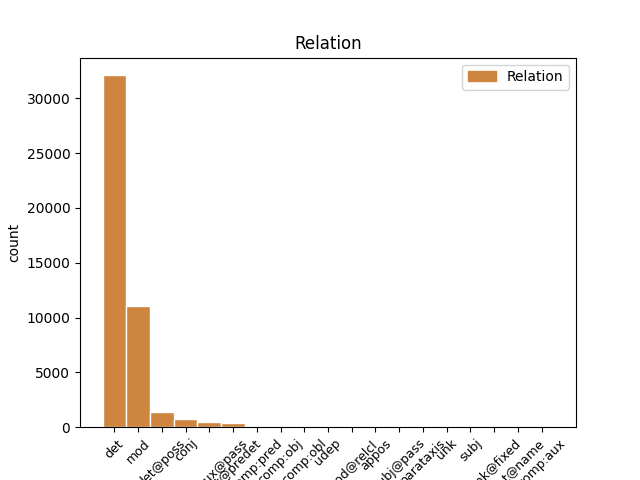
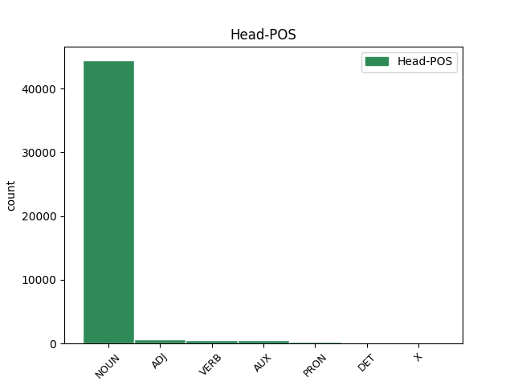
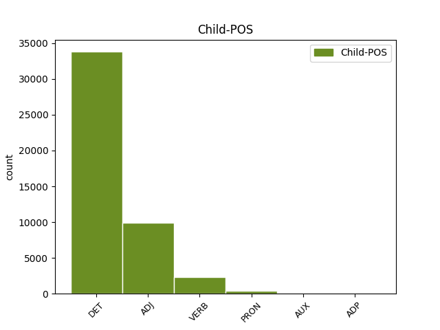

Distribution of features within this leaf



Agreement Rules sorted by frequency.
When the dependent token is None
1 Mohammad _ _ _ _ 0 _ _ _
2 Khatami _ _ _ _ 0 _ _ _
3 , _ _ _ _ 0 _ _ _
4 il _ _ _ _ 0 _ _ _
5 presidente _ _ _ _ 0 _ _ _
6 di _ _ _ _ 0 _ _ _
7 l’ _ _ _ _ 0 _ _ _
8 Iran _ _ _ _ 0 _ _ _
9 , _ _ _ _ 0 _ _ _
10 si _ _ _ _ 0 _ _ _
11 è _ _ _ _ 0 _ _ _
12 impegnato _ _ _ _ 0 _ _ _
13 a _ _ _ _ 0 _ _ _
14 ricostruire _ _ _ _ 0 _ _ _
15 il _ _ _ _ 0 _ _ _
16 centro _ _ _ _ 0 _ _ _
17 di _ _ _ _ 0 _ _ _
18 la il DET RD Definite=Def|Gender=Fem|Number=Sing|PronType=Art 19 det _ _
19 città città NOUN S Gender=Fem 0 _ _ _
20 di _ _ _ _ 0 _ _ _
21 Bam _ _ _ _ 0 _ _ _
22 entro _ _ _ _ 0 _ _ _
23 2 _ _ _ _ 0 _ _ _
24 anni _ _ _ _ 0 _ _ _
25 . _ _ _ _ 0 _ _ _
When the dependent token is None
1 Gli _ _ _ _ 0 _ _ _
2 edifici _ _ _ _ 0 _ _ _
3 di _ _ _ _ 0 _ _ _
4 il _ _ _ _ 0 _ _ _
5 centro _ _ _ _ 0 _ _ _
6 storico _ _ _ _ 0 _ _ _
7 erano _ _ _ _ 0 _ _ _
8 costruiti _ _ _ _ 0 _ _ _
9 con _ _ _ _ 0 _ _ _
10 l’ _ _ _ _ 0 _ _ _
11 argilla argilla NOUN S Gender=Fem|Number=Sing 0 _ _ _
12 rossa rosso ADJ A Gender=Fem|Number=Sing 11 mod _ _
13 di _ _ _ _ 0 _ _ _
14 il _ _ _ _ 0 _ _ _
15 deserto _ _ _ _ 0 _ _ _
16 , _ _ _ _ 0 _ _ _
17 un _ _ _ _ 0 _ _ _
18 materiale _ _ _ _ 0 _ _ _
19 molto _ _ _ _ 0 _ _ _
20 fragile _ _ _ _ 0 _ _ _
21 . _ _ _ _ 0 _ _ _
When the dependent token is None
1 Durante _ _ _ _ 0 _ _ _
2 il _ _ _ _ 0 _ _ _
3 terremoto _ _ _ _ 0 _ _ _
4 in _ _ _ _ 0 _ _ _
5 Iran _ _ _ _ 0 _ _ _
6 , _ _ _ _ 0 _ _ _
7 sono _ _ _ _ 0 _ _ _
8 morte _ _ _ _ 0 _ _ _
9 moltissime _ _ _ _ 0 _ _ _
10 persone _ _ _ _ 0 _ _ _
11 e _ _ _ _ 0 _ _ _
12 il _ _ _ _ 0 _ _ _
13 centro _ _ _ _ 0 _ _ _
14 storico _ _ _ _ 0 _ _ _
15 di _ _ _ _ 0 _ _ _
16 la _ _ _ _ 0 _ _ _
17 città _ _ _ _ 0 _ _ _
18 di _ _ _ _ 0 _ _ _
19 Bam _ _ _ _ 0 _ _ _
20 è _ _ _ _ 0 _ _ _
21 stato essere AUX VA Gender=Masc|Number=Sing|Tense=Past|VerbForm=Part 0 _ _ _
22 completamente _ _ _ _ 0 _ _ _
23 distrutto distruggere VERB V Gender=Masc|Number=Sing|Tense=Past|VerbForm=Part 21 comp:aux@pass _ SpaceAfter=No
24 . _ _ _ _ 0 _ _ _
When the dependent token is None
1 Prima _ _ _ _ 0 _ _ _
2 , _ _ _ _ 0 _ _ _
3 le _ _ _ _ 0 _ _ _
4 squadre _ _ _ _ 0 _ _ _
5 con _ _ _ _ 0 _ _ _
6 più _ _ _ _ 0 _ _ _
7 soldi _ _ _ _ 0 _ _ _
8 costruivano _ _ _ _ 0 _ _ _
9 e _ _ _ _ 0 _ _ _
10 usavano _ _ _ _ 0 _ _ _
11 due _ _ _ _ 0 _ _ _
12 motori _ _ _ _ 0 _ _ _
13 , _ _ _ _ 0 _ _ _
14 uno uno PRON PI Gender=Masc|Number=Sing|PronType=Ind 0 _ _ _
15 per _ _ _ _ 0 _ _ _
16 il _ _ _ _ 0 _ _ _
17 giro _ _ _ _ 0 _ _ _
18 di _ _ _ _ 0 _ _ _
19 qualifica _ _ _ _ 0 _ _ _
20 e _ _ _ _ 0 _ _ _
21 uno uno PRON PI Gender=Masc|Number=Sing|PronType=Ind 14 conj _ _
22 per _ _ _ _ 0 _ _ _
23 la _ _ _ _ 0 _ _ _
24 gara _ _ _ _ 0 _ _ _
25 . _ _ _ _ 0 _ _ _
When the dependent token is None
1 Alcune _ _ _ _ 0 _ _ _
2 attribuzioni _ _ _ _ 0 _ _ _
3 , _ _ _ _ 0 _ _ _
4 come _ _ _ _ 0 _ _ _
5 Tito _ _ _ _ 0 _ _ _
6 Andronico _ _ _ _ 0 _ _ _
7 e _ _ _ _ 0 _ _ _
8 i _ _ _ _ 0 _ _ _
9 primi _ _ _ _ 0 _ _ _
10 drammi _ _ _ _ 0 _ _ _
11 storici _ _ _ _ 0 _ _ _
12 , _ _ _ _ 0 _ _ _
13 restano _ _ _ _ 0 _ _ _
14 controverse _ _ _ _ 0 _ _ _
15 , _ _ _ _ 0 _ _ _
16 mentre _ _ _ _ 0 _ _ _
17 i _ _ _ _ 0 _ _ _
18 due _ _ _ _ 0 _ _ _
19 nobili _ _ _ _ 0 _ _ _
20 congiunti _ _ _ _ 0 _ _ _
21 e _ _ _ _ 0 _ _ _
22 l' _ _ _ _ 0 _ _ _
23 opera opera NOUN S Gender=Fem|Number=Sing 0 _ _ _
24 andata andare AUX VA Gender=Fem|Number=Sing|Tense=Past|VerbForm=Part 23 mod _ _
25 perduta _ _ _ _ 0 _ _ _
26 Cardenio _ _ _ _ 0 _ _ _
27 hanno _ _ _ _ 0 _ _ _
28 una _ _ _ _ 0 _ _ _
29 ben _ _ _ _ 0 _ _ _
30 attestata _ _ _ _ 0 _ _ _
31 documentazione _ _ _ _ 0 _ _ _
32 contemporanea _ _ _ _ 0 _ _ _
33 . _ _ _ _ 0 _ _ _
Disagree Examples:
1 ha _ _ _ _ 0 _ _ _
2 cominciato _ _ _ _ 0 _ _ _
3 Michele _ _ _ _ 0 _ _ _
4 Didoni _ _ _ _ 0 _ _ _
5 , _ _ _ _ 0 _ _ _
6 milanese _ _ _ _ 0 _ _ _
7 di _ _ _ _ 0 _ _ _
8 Quarto _ _ _ _ 0 _ _ _
9 Oggiaro _ _ _ _ 0 _ _ _
10 , _ _ _ _ 0 _ _ _
11 con _ _ _ _ 0 _ _ _
12 il _ _ _ _ 0 _ _ _
13 titolo _ _ _ _ 0 _ _ _
14 in _ _ _ _ 0 _ _ _
15 la il DET RD Definite=Def|Gender=Fem|Number=Sing|PronType=Art 17 det _ _
16 20 _ _ _ _ 0 _ _ _
17 km chilometro NOUN S Gender=Masc 0 _ _ _
18 di _ _ _ _ 0 _ _ _
19 marcia _ _ _ _ 0 _ _ _
20 ( _ _ _ _ 0 _ _ _
21 De _ _ _ _ 0 _ _ _
22 Benedictis _ _ _ _ 0 _ _ _
23 , _ _ _ _ 0 _ _ _
24 terzo _ _ _ _ 0 _ _ _
25 , _ _ _ _ 0 _ _ _
26 è _ _ _ _ 0 _ _ _
27 stato _ _ _ _ 0 _ _ _
28 poi _ _ _ _ 0 _ _ _
29 squalificato _ _ _ _ 0 _ _ _
30 ) _ _ _ _ 0 _ _ _
31 , _ _ _ _ 0 _ _ _
32 ha _ _ _ _ 0 _ _ _
33 finito _ _ _ _ 0 _ _ _
34 la _ _ _ _ 0 _ _ _
35 splendida _ _ _ _ 0 _ _ _
36 Fiona _ _ _ _ 0 _ _ _
37 May _ _ _ _ 0 _ _ _
38 , _ _ _ _ 0 _ _ _
39 londinese _ _ _ _ 0 _ _ _
40 ora _ _ _ _ 0 _ _ _
41 italiana _ _ _ _ 0 _ _ _
42 grazie _ _ _ _ 0 _ _ _
43 a _ _ _ _ 0 _ _ _
44 il _ _ _ _ 0 _ _ _
45 matrimonio _ _ _ _ 0 _ _ _
46 con _ _ _ _ 0 _ _ _
47 l' _ _ _ _ 0 _ _ _
48 astista _ _ _ _ 0 _ _ _
49 lunghista _ _ _ _ 0 _ _ _
50 Gianni _ _ _ _ 0 _ _ _
51 Iapichino _ _ _ _ 0 _ _ _
52 , _ _ _ _ 0 _ _ _
53 con _ _ _ _ 0 _ _ _
54 la _ _ _ _ 0 _ _ _
55 vittoria _ _ _ _ 0 _ _ _
56 in _ _ _ _ 0 _ _ _
57 il _ _ _ _ 0 _ _ _
58 lungo _ _ _ _ 0 _ _ _
59 femminile _ _ _ _ 0 _ _ _
60 . _ _ _ _ 0 _ _ _
1 La _ _ _ _ 0 _ _ _
2 tragedia _ _ _ _ 0 _ _ _
3 è _ _ _ _ 0 _ _ _
4 avvenuta _ _ _ _ 0 _ _ _
5 sabato _ _ _ _ 0 _ _ _
6 mattina _ _ _ _ 0 _ _ _
7 ( _ _ _ _ 0 _ _ _
8 ma _ _ _ _ 0 _ _ _
9 la _ _ _ _ 0 _ _ _
10 notizia _ _ _ _ 0 _ _ _
11 è _ _ _ _ 0 _ _ _
12 giunta _ _ _ _ 0 _ _ _
13 in _ _ _ _ 0 _ _ _
14 Italia _ _ _ _ 0 _ _ _
15 solo _ _ _ _ 0 _ _ _
16 ieri _ _ _ _ 0 _ _ _
17 ) _ _ _ _ 0 _ _ _
18 su _ _ _ _ 0 _ _ _
19 la _ _ _ _ 0 _ _ _
20 strada _ _ _ _ 0 _ _ _
21 che _ _ _ _ 0 _ _ _
22 porta _ _ _ _ 0 _ _ _
23 a _ _ _ _ 0 _ _ _
24 il _ _ _ _ 0 _ _ _
25 parco parco NOUN S Gender=Masc|Number=Sing 0 _ _ _
26 di _ _ _ _ 0 _ _ _
27 Virunga _ _ _ _ 0 _ _ _
28 - _ _ _ _ 0 _ _ _
29 una uno PRON PI Gender=Fem|Number=Sing|PronType=Ind 25 appos _ _
30 di _ _ _ _ 0 _ _ _
31 le _ _ _ _ 0 _ _ _
32 più _ _ _ _ 0 _ _ _
33 belle _ _ _ _ 0 _ _ _
34 e _ _ _ _ 0 _ _ _
35 antiche _ _ _ _ 0 _ _ _
36 oasi _ _ _ _ 0 _ _ _
37 naturali _ _ _ _ 0 _ _ _
38 di _ _ _ _ 0 _ _ _
39 il _ _ _ _ 0 _ _ _
40 mondo _ _ _ _ 0 _ _ _
41 - _ _ _ _ 0 _ _ _
42 creato _ _ _ _ 0 _ _ _
43 in _ _ _ _ 0 _ _ _
44 il _ _ _ _ 0 _ _ _
45 1925 _ _ _ _ 0 _ _ _
46 . _ _ _ _ 0 _ _ _
1 Scopo _ _ _ _ 0 _ _ _
2 di _ _ _ _ 0 _ _ _
3 il _ _ _ _ 0 _ _ _
4 versamento _ _ _ _ 0 _ _ _
5 era _ _ _ _ 0 _ _ _
6 quello _ _ _ _ 0 _ _ _
7 di _ _ _ _ 0 _ _ _
8 agevolare _ _ _ _ 0 _ _ _
9 l' _ _ _ _ 0 _ _ _
10 ingresso _ _ _ _ 0 _ _ _
11 in _ _ _ _ 0 _ _ _
12 la _ _ _ _ 0 _ _ _
13 Confederazione _ _ _ _ 0 _ _ _
14 di _ _ _ _ 0 _ _ _
15 una _ _ _ _ 0 _ _ _
16 società società NOUN S Gender=Fem 0 _ _ _
17 italo italo ADJ A Gender=Masc|Number=Sing 16 mod _ _
18 libica _ _ _ _ 0 _ _ _
19 , _ _ _ _ 0 _ _ _
20 la _ _ _ _ 0 _ _ _
21 Gatoil _ _ _ _ 0 _ _ _
22 , _ _ _ _ 0 _ _ _
23 osteggiata _ _ _ _ 0 _ _ _
24 da _ _ _ _ 0 _ _ _
25 il _ _ _ _ 0 _ _ _
26 governo _ _ _ _ 0 _ _ _
27 di _ _ _ _ 0 _ _ _
28 Berna _ _ _ _ 0 _ _ _
29 . _ _ _ _ 0 _ _ _
1 Con _ _ _ _ 0 _ _ _
2 calma _ _ _ _ 0 _ _ _
3 le lo PRON PC Clitic=Yes|Gender=Fem|Person=3|PronType=Prs 5 comp:obl _ _
4 abbiamo _ _ _ _ 0 _ _ _
5 spiegato spiegare VERB V Gender=Masc|Number=Sing|Tense=Past|VerbForm=Part 0 _ _ _
6 ... _ _ _ _ 0 _ _ _
7 " _ _ _ _ 0 _ _ _
8 , _ _ _ _ 0 _ _ _
9 dice _ _ _ _ 0 _ _ _
10 Barbara _ _ _ _ 0 _ _ _
11 , _ _ _ _ 0 _ _ _
12 a _ _ _ _ 0 _ _ _
13 le _ _ _ _ 0 _ _ _
14 spalle _ _ _ _ 0 _ _ _
15 il _ _ _ _ 0 _ _ _
16 via _ _ _ _ 0 _ _ _
17 vai _ _ _ _ 0 _ _ _
18 di _ _ _ _ 0 _ _ _
19 pochi _ _ _ _ 0 _ _ _
20 amici _ _ _ _ 0 _ _ _
21 rimasti _ _ _ _ 0 _ _ _
22 a _ _ _ _ 0 _ _ _
23 Locate _ _ _ _ 0 _ _ _
24 . _ _ _ _ 0 _ _ _
1 E _ _ _ _ 0 _ _ _
2 quel _ _ _ _ 0 _ _ _
3 contestatissimo _ _ _ _ 0 _ _ _
4 rosario _ _ _ _ 0 _ _ _
5 di _ _ _ _ 0 _ _ _
6 espiazione _ _ _ _ 0 _ _ _
7 che _ _ _ _ 0 _ _ _
8 la il DET RD Definite=Def|Gender=Fem|Number=Sing|PronType=Art 9 det _ _
9 presidente presidente NOUN S Gender=Masc|Number=Sing 0 _ _ _
10 di _ _ _ _ 0 _ _ _
11 la _ _ _ _ 0 _ _ _
12 Camera _ _ _ _ 0 _ _ _
13 avrebbe _ _ _ _ 0 _ _ _
14 recitato _ _ _ _ 0 _ _ _
15 dopo _ _ _ _ 0 _ _ _
16 l' _ _ _ _ 0 _ _ _
17 inaugurazione _ _ _ _ 0 _ _ _
18 di _ _ _ _ 0 _ _ _
19 la _ _ _ _ 0 _ _ _
20 Moschea _ _ _ _ 0 _ _ _
21 di _ _ _ _ 0 _ _ _
22 Roma _ _ _ _ 0 _ _ _
23 : _ _ _ _ 0 _ _ _